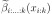
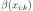

rbnet.base.Cell
- class rbnet.base.Cell(variable, *args, **kwargs)[source]
Bases:
ABC,ModuleBase class for RBN cells associated to a non-terminal template variable. Cells hold all transitions that are possible from that variable, accessible via
transitions(), and implement computation of the mixture of inside probabilities over that variable ininside_mixture().A cell for a given non-terminal variable
- Parameters:
variable – non-terminal variable
Public Data Attributes:
dump_patchescall_super_initforward(*input)Define the computation performed at every call.
Inherited from
Moduledump_patchescall_super_initT_destinationtrainingPublic Methods:
__init__(variable, *args, **kwargs)A cell for a given non-terminal variable
Iterate through all possible transitions.
inside_mixture(inside_marginals)For a list of inside marginals , compute the mixture
Inherited from
Module__init__(*args, **kwargs)Initialize internal Module state, shared by both nn.Module and ScriptModule.
forward(*input)Define the computation performed at every call.
register_buffer(name, tensor[, persistent])Add a buffer to the module.
register_parameter(name, param)Add a parameter to the module.
add_module(name, module)Add a child module to the current module.
register_module(name, module)Alias for
add_module().get_submodule(target)Return the submodule given by
targetif it exists, otherwise throw an error.set_submodule(target, module[, strict])Set the submodule given by
targetif it exists, otherwise throw an error.get_parameter(target)Return the parameter given by
targetif it exists, otherwise throw an error.get_buffer(target)Return the buffer given by
targetif it exists, otherwise throw an error.get_extra_state()Return any extra state to include in the module's state_dict.
set_extra_state(state)Set extra state contained in the loaded state_dict.
apply(fn)Apply
fnrecursively to every submodule (as returned by.children()) as well as self.cuda([device])Move all model parameters and buffers to the GPU.
ipu([device])Move all model parameters and buffers to the IPU.
xpu([device])Move all model parameters and buffers to the XPU.
mtia([device])Move all model parameters and buffers to the MTIA.
cpu()Move all model parameters and buffers to the CPU.
type(dst_type)Casts all parameters and buffers to
dst_type.float()Casts all floating point parameters and buffers to
floatdatatype.double()Casts all floating point parameters and buffers to
doubledatatype.half()Casts all floating point parameters and buffers to
halfdatatype.bfloat16()Casts all floating point parameters and buffers to
bfloat16datatype.to_empty(*, device[, recurse])Move the parameters and buffers to the specified device without copying storage.
to(*args, **kwargs)Move and/or cast the parameters and buffers.
register_full_backward_pre_hook(hook[, prepend])Register a backward pre-hook on the module.
register_backward_hook(hook)Register a backward hook on the module.
register_full_backward_hook(hook[, prepend])Register a backward hook on the module.
register_forward_pre_hook(hook, *[, ...])Register a forward pre-hook on the module.
register_forward_hook(hook, *[, prepend, ...])Register a forward hook on the module.
__call__(*args, **kwargs)Call self as a function.
__getstate__()Helper for pickle.
__setstate__(state)__getattr__(name)__setattr__(name, value)Implement setattr(self, name, value).
__delattr__(name)Implement delattr(self, name).
register_state_dict_post_hook(hook)Register a post-hook for the
state_dict()method.register_state_dict_pre_hook(hook)Register a pre-hook for the
state_dict()method.state_dict(*args[, destination, prefix, ...])Return a dictionary containing references to the whole state of the module.
register_load_state_dict_pre_hook(hook)Register a pre-hook to be run before module's
load_state_dict()is called.register_load_state_dict_post_hook(hook)Register a post-hook to be run after module's
load_state_dict()is called.load_state_dict(state_dict[, strict, assign])Copy parameters and buffers from
state_dictinto this module and its descendants.parameters([recurse])Return an iterator over module parameters.
named_parameters([prefix, recurse, ...])Return an iterator over module parameters, yielding both the name of the parameter as well as the parameter itself.
buffers([recurse])Return an iterator over module buffers.
named_buffers([prefix, recurse, ...])Return an iterator over module buffers, yielding both the name of the buffer as well as the buffer itself.
children()Return an iterator over immediate children modules.
named_children()Return an iterator over immediate children modules, yielding both the name of the module as well as the module itself.
modules()Return an iterator over all modules in the network.
named_modules([memo, prefix, remove_duplicate])Return an iterator over all modules in the network, yielding both the name of the module as well as the module itself.
train([mode])Set the module in training mode.
eval()Set the module in evaluation mode.
requires_grad_([requires_grad])Change if autograd should record operations on parameters in this module.
zero_grad([set_to_none])Reset gradients of all model parameters.
share_memory()See
torch.Tensor.share_memory_().extra_repr()Return the extra representation of the module.
__repr__()Return repr(self).
__dir__()Default dir() implementation.
compile(*args, **kwargs)Compile this Module's forward using
torch.compile().Private Data Attributes:
_abc_impl_versionThis allows better BC support for
load_state_dict()._parameters_buffers_non_persistent_buffers_set_backward_pre_hooks_backward_hooks_is_full_backward_hook_forward_hooks_forward_hooks_with_kwargs_forward_hooks_always_called_forward_pre_hooks_forward_pre_hooks_with_kwargs_state_dict_hooks_load_state_dict_pre_hooks_state_dict_pre_hooks_load_state_dict_post_hooks_modules_compiled_call_implInherited from
ABC_abc_implInherited from
Module_versionThis allows better BC support for
load_state_dict()._compiled_call_impl_parameters_buffers_non_persistent_buffers_set_backward_pre_hooks_backward_hooks_is_full_backward_hook_forward_hooks_forward_hooks_with_kwargs_forward_hooks_always_called_forward_pre_hooks_forward_pre_hooks_with_kwargs_state_dict_hooks_load_state_dict_pre_hooks_state_dict_pre_hooks_load_state_dict_post_hooks_modulesPrivate Methods:
Inherited from
Module_apply(fn[, recurse])_get_backward_hooks()Return the backward hooks for use in the call function.
_get_backward_pre_hooks()_maybe_warn_non_full_backward_hook(inputs, ...)_slow_forward(*input, **kwargs)_wrapped_call_impl(*args, **kwargs)_call_impl(*args, **kwargs)_register_state_dict_hook(hook)Register a post-hook for the
state_dict()method._save_to_state_dict(destination, prefix, ...)Save module state to the destination dictionary.
_register_load_state_dict_pre_hook(hook[, ...])See
register_load_state_dict_pre_hook()for details._load_from_state_dict(state_dict, prefix, ...)Copy parameters and buffers from
state_dictinto only this module, but not its descendants._named_members(get_members_fn[, prefix, ...])Help yield various names + members of modules.
_get_name()_replicate_for_data_parallel()
- abstractmethod inside_mixture(inside_marginals)[source]
For a list of inside marginals , compute the mixture

as described in more detail here.
The inside marginals are typically computed by a custom implementation of
Transition.inside_marginals()- Parameters:
inside_marginals – iterable over inside marginals (as returned by
Transition.inside_marginals())- Returns:
representation of the inside probability 
- training: bool
- abstractmethod transitions()[source]
Iterate through all possible transitions.
- Return type:
Iterable[Transition]